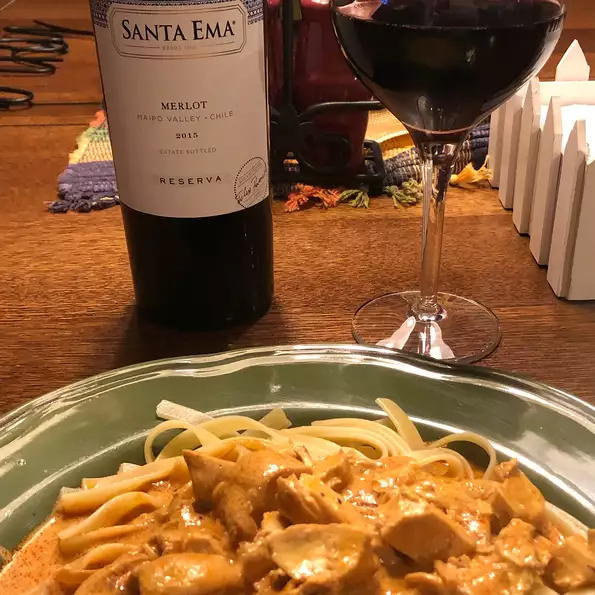

Sour Cream Chicken Paprika

Description
It is a milk, rich and creamy recipe.A one-skillet dish. Serve over hot cooked egg noodles or rice, if desired.
Ingredients
- 4 breast half, bone and skin removed (blank)s skinless, boneless chicken breast halves
- 1 ½ tablespoons vegetable oil
- 1 cup chopped onion
- 1 ½ tablespoons butter
- 2 tablespoons paprika
- ½ teaspoon salt
- 2 cups chicken stock
- 1 teaspoon all-purpose flour
- 1 (8 ounce) container sour cream
Steps
- You can leave breasts whole or cut them up, whatever your preference. In a large skillet, heat oil over medium-high heat. Add chicken and pan-fry until cooked through and juices run clear, about 10 minutes. Remove chicken from skillet and set aside.
- Using the same skillet, cook onion in butter until translucent but not brown, about 5 to 8 minutes. Season with paprika and salt. Pour chicken stock into the pan, and bring all to a boil. Reduce heat to simmer; mix flour with sour cream until smooth, then whisk into chicken stock. Place chicken in skillet; simmer until chicken is heated through and sauce has thickened.